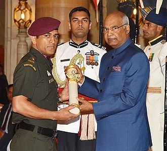

Dhoniwas born in Ranchi, Bihar (now in Jharkhand) and hails from a Hindu Rajput family with roots in Uttarakhand.He is the youngest of three children of Pan Singh and Devaki Devi.His paternal village Lwali, is in Jainti Tehsil, Lamgara block of the Almora District of Uttarakhand.His parents moved from Uttarakhand to Ranchi, Jharkhand where his father worked as a pump operator in junior management position in MECON Colony situated in Doranda area in Ranchi.Unlike Dhoni, his uncle and cousins spell their surname as Dhauni.Previously Dhoni was the goalkeeper for his DAV Jawahar Vidya Mandir school's football team,but after seeing his goalkeeping skills, coach Keshav Ranjan Banerjee, one who inspired Dhoni to be a cricketer, picked him to play cricket for his school team.His exceptional wicketkeeping skills allowed him to become the regular wicketkeeper at the Commando Cricket Club (1995–1998). Based on his performance at club cricket, he was picked for the 1997/98 season Vinoo Mankad Trophy Under-16 Championship, where he performed well.
Dhoni's performance in the 2002–03 season included three half-centuries in the Ranji Trophy and a couple of half-centuries in the Deodhar Trophy, as he started gaining recognition for his lower-order contribution as well as hard-hitting batting style. In the 2003/04 season, Dhoni scored a century (128*) against Assam in the first match of the Ranji ODI tournament. Dhoni was part of the East Zone squad that won the Deodhar Trophy 2003–2004 season and contributed with 244 runs in 4 matches,including a century (114) against Central zone. In the Duleep Trophy finals, Dhoni was picked over international cricketer Deep Dasgupta to represent East Zone.He scored a fighting half-century in the second innings in a losing cause.Dhoni's talent was discovered via the BCCI's small-town talent-spotting initiative TRDW. Dhoni was discovered by TRDO Prakash Poddar, captain of Bengal in the 1960s, when he saw Dhoni play for Jharkhand at a match in Jamshedpur in 2003, and sent a report to the National Cricket Academy.
He was recognised for his efforts in the 2003/04 season, especially in the One Day format and was picked for the India A squad for a tour of Zimbabwe and Kenya.Against the Zimbabwe XI in Harare Sports Club, Dhoni had his best wicket-keeping effort with 7 catches and 4 stumpings in the match.In the tri-nation tournament involving Kenya, India A and Pakistan A, Dhoni helped India A chase down their target of 223 against Pakistan A with a half-century.Continuing his good performance, he scored back to back centuries – 120[50] and 119*[51] – against the same team. Dhoni scored 362 runs in 6 innings at an average of 72.40 and his performance in the series received attention from the then Indian captain – Sourav Ganguly[52] and Ravi Shastri, amongst others.
The Indian ODI team in the early 2000s saw Rahul Dravid as the wicket-keeper to ensure that the wicket-keeper spot didn't lack in batting talent.The team also saw the entry of wicket-keeper/batsmen from the junior ranks, with talents like Parthiv Patel and Dinesh Karthik (both India U-19 captains) named in the Test squads.With Dhoni making a mark in the India A squad, he was picked in the ODI squad for the Bangladesh tour in 2004/05.Dhoni did not have a great start to his ODI career, getting run out for a duck on debut.In spite of an average series against Bangladesh, Dhoni was picked for the Pakistan ODI series.
India unexpectedly crashed out of the World Cup after losses to Bangladesh and Sri Lanka in the group stage. Dhoniwas out for a duck in both these matches and scored just 29 runs in the tournament. After the loss to Bangladesh in 2007 Cricket World Cup, the house that Dhoni was constructing in his home-town Ranchi was vandalised and damaged by political activists of JMM.The local police arranged for security for his family as India exited the World Cup in the first round. Dhoni put his disappointing performances in the World Cup behind him by scoring 91* against Bangladesh, after India were left in a tight spot earlier in the run-chase. Dhoni was declared the Man of the Match for his performance, his fourth in ODI cricket. He was also later adjudged the Man of the Series after the third game of the series was washed away. Dhoni had a good Afro-Asia Cup, scoring 174 runs in 3 matches at an average of 87.00, with a blitzkrieg 139 not out off 97 balls, a Man of the Match innings, in the third ODI. Dhoni was named vice-captain of the ODI team for the series against South Africa in Ireland and the subsequent India-England seven-match ODI series.Dhoni, who received a 'B' grade contract in December 2005, was awarded an 'A' grade contract in June 2007. He was also elected as the captain of the Indian squad for the World Twenty20 in September 2007. On 2 September 2007, Dhoni equalled his idol Adam Gilchrist's international record for the most dismissals in an innings in ODI by catching five English players and stumping one.
During the series between India and Australia in 2009, Dhoni scored 124 runs in 107 balls in the second ODI, and scored 71 runs in 95 balls in the third ODI. Along with Yuvraj Singh's 78 off of 96 balls, India won the third ODI by 6 wickets. Dhoni took his first and only wicket in international cricket on 30 September 2009. He bowled Travis Dowlin of the West Indies during a match in the 2009 ICC Champions Trophy.Dhoni topped the ICC ODI Batsman rankings for several months in 2009.Michael Hussey from Australia replaced him at the top spot at the beginning of 2010. Dhoni had an excellent year in ODIs in 2009, scoring 1198 runs in just 24 innings, at considerably high average of 70.43. Dhoni was also the joint top-scorer in ODIs in 2009 along with Ricky Ponting, but the latter having played 30 innings. For his performances in 2009, he was named as captain and wicketkeeper of the World ODI XI by the ICC.
The 2011 Cricket World Cup was the tenth World Cup, organized by the International Cricket Council (ICC). The competition took place between 19 February and 2 April 2011. Co-hosted by India, Sri Lanka, and Bangladesh, the tournament was the third World Cup to be played in the Indian subcontinent. The ICC ruled out Pakistan citing security reasons. There were 14 participating teams, which included four associate members of the ICC—Kenya, Canada, Ireland and Netherlands. The match was the tenth World Cup final and was hosted at the Wankhede Stadium, Mumbai. It was the first time the city has hosted a World Cup final, and was the second final to be hosted by India, after the 1987 final held at Eden Gardens, Kolkata. The 2011 final was the first to feature two teams from the same continent, and the first time that two co-hosts contested the final.The match was watched by about 42,000 spectators at the venue and about 135 million viewers on television in India.This was the second time in World Cup history that a host nation won the final and the first time to win on their home ground.
On 12 February 2012, Dhoni made an unbeaten 44 to guide India to their first win over Australia at Adelaide. In the final over, he hit considerably large six which travelled 112 meters off the bowling of Clint McKay. During the post-match presentation, he described this six as more important than the one he hit during the ICC World Cup final in 2011.[126] He was named as captain and wicketkeeper of the 'Team of the Tournament' for the 2014 T20 World Cup by the ICC.
India toured Pakistan in January–February 2006 and Dhoni scored his maiden century in the second Test at Faisalabad. India was struggling, where Dhoni along with Irfan Pathan tried to recover, with the team still needing 107 runs to avoid a follow-on. Dhoni played in his naturally aggressive style as he brought up his maiden Test century in 93 balls, after scoring the first fifty in 34 deliveries. Dhoni followed up the century with respectable batting performances over the next three matches, one against Pakistan that India lost and two against England that had India holding a 1–0 lead. Dhoni was the top scorer in India's first innings in the third Test at Wankhede Stadium as his 64 helped India post 279 in reply to England's 400. However, Dhoni and the Indian fielders dropped catches and missed many dismissal chances, including a key stumping opportunity of Andrew Flintoff (14).Dhoni failed to collect the Harbhajan Singh delivery cleanly as Flintoff went on to make 36 more runs as England set a target of 313 for the home team, a target that India was never in danger of threatening. A batting collapse saw the team being dismissed for 100 and Dhoni scored just 5 runs and faced criticism for his wicket-keeping lapses as well as his shot selection.
Dhoni announced his retirement from international cricket on 15 August 2020. The decision came as a surprise to many fans and cricket experts, as Dhoni had not announced any plans to retire before that. He had not played any international cricket since India's loss in the 2019 Cricket World Cup semi-final. He also had not announced any plans to retire from domestic cricket, and continues to play for the Chennai Super Kings in the Indian Premier League.
Dhoni was contracted by the Chennai Super Kings (CSK) for US$1.5 million. This made him the most expensive player in the IPL for the first season auctions.Under his captaincy, CSK won the 2010, 2011, 2018 and the 2021 Indian Premier League titles and the 2010 and 2014 Champions League T20 titles and ended up as a runner-up in 2008, 2012, 2013, 2015 and 2019 league seasons. MS Dhoni became the first player to play 200 T20 matches for Super Kings. Dhoni is at the top of the list of most matches played in the Indian Premier League.Dhoni is also one of the three captains to have won the Indian Premier League twice, with CSK. In 2015, the Chennai Super Kings got banned from the IPL for 2 years by R.M. Lodha from the committee of Supreme Court of India.They were banned due to the illegal betting of one of their officials, Gurunath Meiyappan.He was arrested with charges of spot-fixing According to Dhoni, it was darkest period of his career. He said "The biggest crime that I can commit is not a murder, it is actually match-fixing". In 2016, Rising Pune Supergiant (RPS), a debuting IPL franchise team made him captain but after poor performance of the team in that season they removed Dhoni from captain's position and chose Steve Smith, then Australian national team captain, for the post. Dhoni played as wicketkeeper batsman in 2017 season for RPS. In the 2018 IPL season, CSK returned to IPL, and he was again appointed to lead the franchise by the franchise.Dhoniscored 455 runs in that season and led his side to their third IPL title. In the 2020 & 2021 seasons of the IPL, Dhoni failed to perform where he scored 200 runs in 14 innings in 2020 and 116 runs in 16 innings with an average of 15.29 in 2021 IPL season. He led the franchise to 4th title in 2021 Indian Premier League season. Dhoni got retained by CSK for ₹12 Cr, before IPL 2022 player's auction.He stepped down from captaincy on 24 March 2022, where Ravindra Jadeja became the new captain.However, on 30 April 2022, Jadeja handed over the captaincy back to Dhoni.
Dhoni is a right-handed batsman and wicket-keeper. Dhoni is an unorthodox batsman. He deviates from conventional coaching manuals and showcases his unique batting technique. Dhoni displays a proclivity for hitting full-length deliveries towards the Long-on, Long-off, and Midwicket regions, rather than the conventional Cover region.Initially, Dhoni appeared as a lower-order attacking batsman but he gradually changed his playing style to deal with high-pressure scenarios and his growing responsibility as a captain. He is a powerful hitter of the ball and is one of the fastest men in running between the wickets.He made use of the helicopter shot technique,taught to him by a fellow player and childhood friend Santosh Lal.Initially, Dhoni appeared as a lower-order attacking batsman but he gradually changed his playing style to deal with high-pressure scenarios and his growing responsibility as a captain. He is a powerful hitter of the ball and is one of the fastest men in running between the wickets.He made use of the helicopter shot technique,taught to him by a fellow player and childhood friend Santosh Lal.
#Dhoni is the first Indian wicket-keeper to score 4,000 Test runs. #After hitting a six in the third Test against England in Southampton, Dhoni completed 50 sixes as a captain, an Indian record.
#Dhoni is the third captain (and the first non-Australian) overall to win 100 games. #First player to pass 10,000 runs in ODI cricket with having a career average of over 50. #Most not outs (84) in ODIs. #Dhoni's 183* against Sri Lanka in 2005 is the highest score by a wicket-keeper. #Dhoni and Bhuvneshwar Kumar were involved in a partnership of 100 not out against Sri Lanka, which is India's highest eighth wicket partnership in ODIs.[181] #Dhoni holds the records of the most dismissals in an innings (6) and career (432) by an Indian wicket-keeper. #Dhoni has the most stumpings (123) by any wicket-keeper in an ODI career, and is so far the only keeper to pass 100 stumpings.
#Dhoni holds the record for playing the most T20I innings (76) and scored the most runs (1,153) before scoring a fifty #Most dismissals as wicket-keeper in T20Is (91) #Most stumpings as wicket-keeper in T20Is (34) #Most catches as wicket keeper in a T20I innings (5)
#2018: Padma Bhushan, India's third-highest civilian award. #2009: Padma Shri, India's fourth-highest civilian award. #2007–08: Major Dhyanchand Khel Ratna award, India's highest honor given for achievement in sports.
#ICC ODI Player of the Year: 2008, 2009 #ICC World ODI XI: 2006, 2008, 2009, 2010, 2011, 2012, 2013, 2014 (captain in 2009, 2011–2014) #Castrol Indian Cricketer of the Year: 2011 #ICC Men's ODI team of the decade: 2011–2020 (captain and wicketkeeper) #ICC Men's T20I team of the decade: 2011–2020 (captain and wicketkeeper) #ICC Spirit of the cricket award of the decade: 2011–2020
